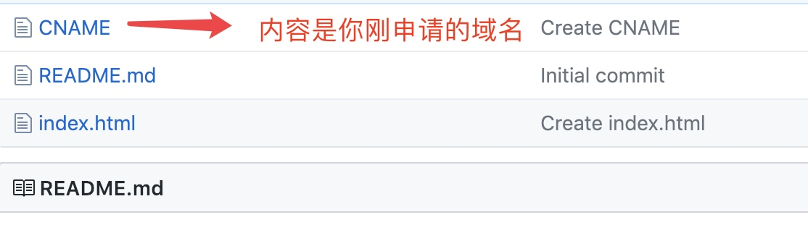

通过这篇文章，我们可以学习到如何通过Github搭建自己的博客，以及如何将自己的域名绑定到Github地址上，并通过申请SSL证书来实现HTTPS安全访问。
3
Github搭建博客
- 首先注册一个Github账号，Github
- 点击右上角的+号，选择New repository
- 填写如下信息，username就是你的用户名
安装Git
首先查看电脑是否安装Git，终端输入：
git
如果安装过Git，则会输出：
通过homebrew安装Git
未安装homebrew，请先安装homebrew
/usr/bin/ruby -e "$(curl -fsSL https://raw.githubusercontent.com/Homebrew/install/master/install)"安装Git
brew install git
通过Xcode安装
直接从AppStore安装Xcode，Xcode集成了Git，不过默认没有安装，你需要运行Xcode，选择菜单“Xcode”->“Preferences”，在弹出窗口中找到“Downloads”，选择“Command Line Tools”，点“Install”就可以完成安装了。
创建ssh key、配置git
设置username和email
git config --global user.name "username" git config --global user.email "email@example.com"通过终端创建ssh key
ssh-keygen -t rsa -C "email@example.com"一路回车即可
终端查看.ssh/id_rsa.pub文件
cat .ssh/id_rsa.pubGithub 添加ssh key
我们将刚刚使用cat命令查看到的key添加进去，title随便写就可以了。
验证链接
命令行输入
ssh -T git@github.com
查看终端输出结果：Last login: Sat Jan 6 14:42:55 on $ ssh -T git@github.com
Hi username! You've successfully authenticated, but GitHub does not provide shell access.
绑定域名和Github地址
我这里是从GoDaddy上购买的域名
点击主页右上角自己的账户名–>点击manage my domains–>在My Domains选择Manage DNS
添加以下两条解析记录即可：
| 类型type | 主机host | 指向points to | TTL(Time To Live) |
|---|---|---|---|
| A | @ | github page的IP 地址 | 600 |
| CNAME | www | github page的网址 | 600 |
Tips：github page的IP地址可以通过以下命令获取：
ping username.github.io
接下来需要在username.github.io仓库中添加CNAME文件，其中填入购买的域名。

如下所示：
稍等一下，就可以使用刚购买的域名example.com访问username.github.io了，但是只能通过http访问，因为我们这里却少了https证书。
通过HTTPS访问自定义域名
由于GoDaddy的SSL证书超级贵，所以我们可以迁移到免费提供SSL的NS处。我这里选择了Cloudflare。
- 到Cloudflare官网注册；
- 根据指引点击Add Site，添加自定义域名example.com,自动开始扫描DNS解析记录；
- 扫描完成后，Cloudflare会选择给我们分配两个NS地址，将这两个地址替换GoDaddy上的原NS地址，等待生效；
- 在Cloudflare上检查自己网站的状态，显示为Active时表示NS更改成功；
- 在Cloudflare将自己网站的SSL状态改变为Full状态，等待Status变为Active Certificate，通常生效需要十几分钟。
- 再访问自定义域名时，就可以看见是https传输，网址前也有一把绿色小锁,可以看到这个证书其实是Cloudflare的证书。
总结
自己动手搭建还是很有意思的。这样的纯静态网站也相对比较安全，网站出现问题除非出现在如下几个方面：
- DNS劫持
- SSH私钥泄漏
- Github账号被盗
在MAC上配合MWeb使用还是很方便的。
参考链接：
在code里寻找乐趣
WenBo丨星空灬
yucicheung
MWeb